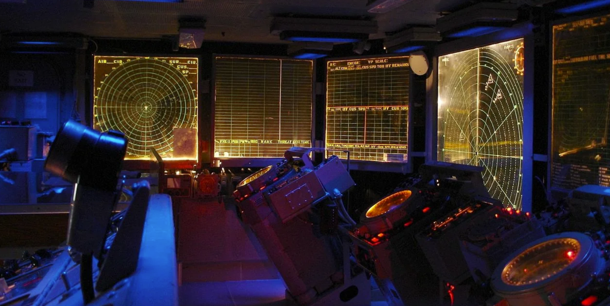
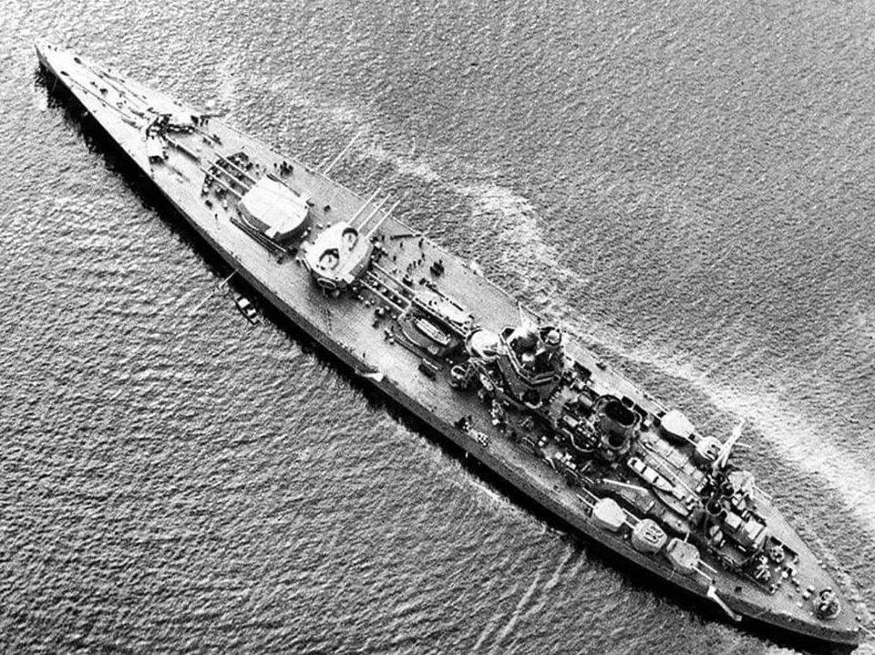
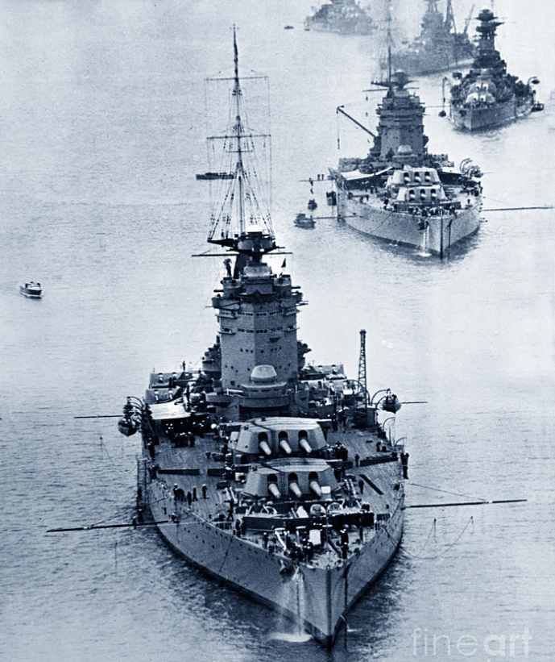
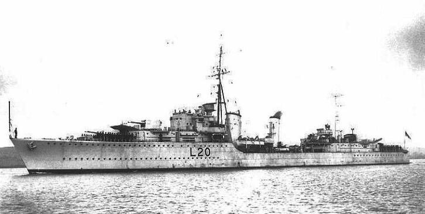
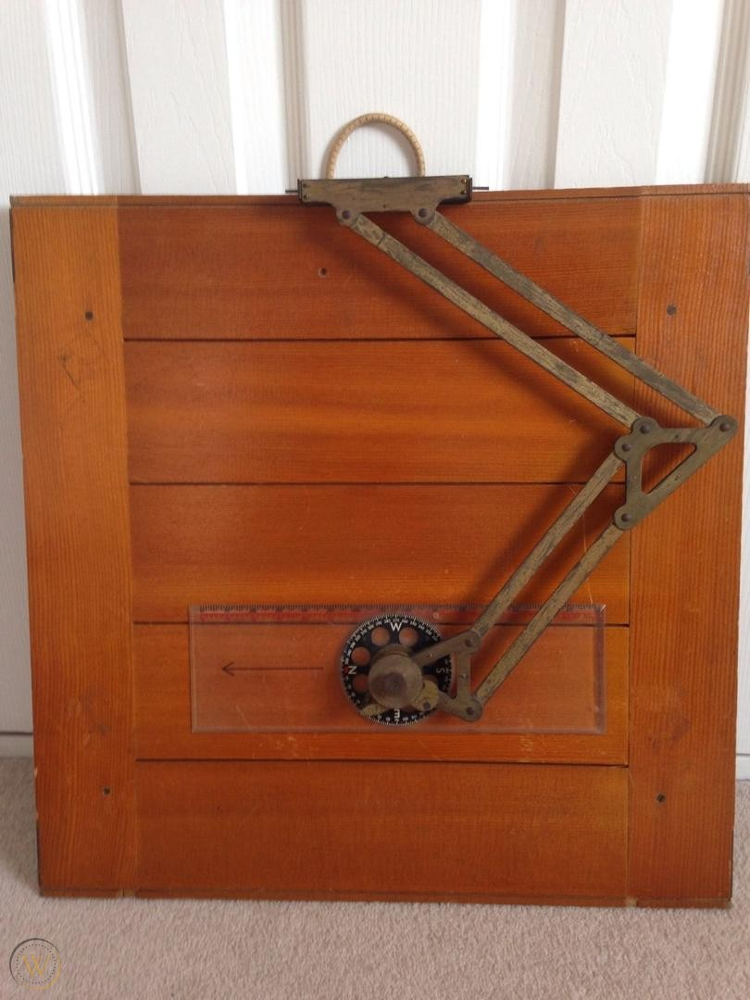
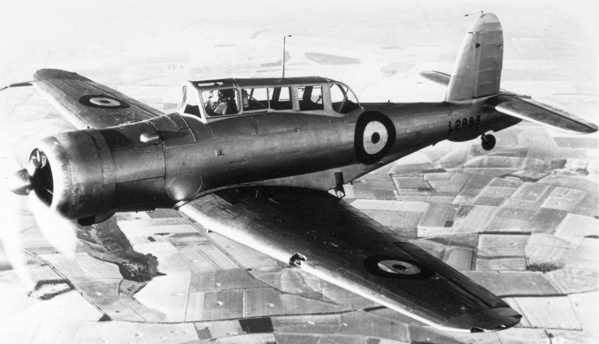
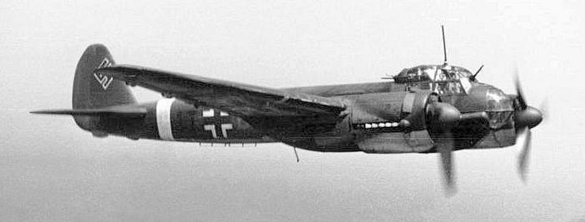
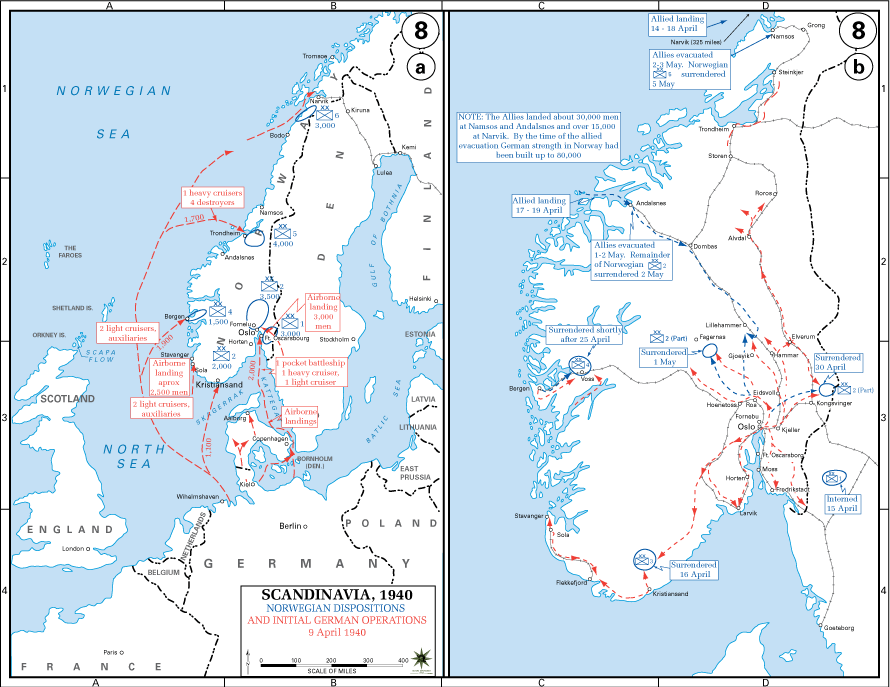
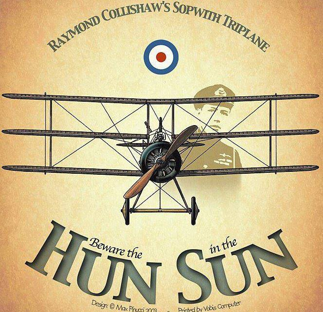
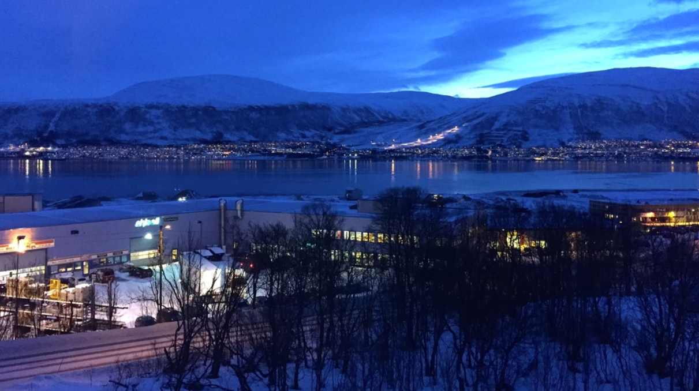

레이더 개발 이야기 (19) - 레이더가 서말이라도 꿰어야...
게시: 2023-02-02T06:30:49+09:00
<레이더가 있으면 뭐하나> 과거 WW2 시절 전함들에서 가장 두껍게 장갑을 입혀 놓는 부분은 물론 탄약고. 현대적인 군함에서도 탄약고는 여전히 두꺼운 장갑으로 보호되지만 그에 못지 않게 두꺼운 장갑으로 보호되는 부분이 바로 CIC (combat information center). 레이더 등 각종 센서에서 취합된 정보들을 이용해 적함, 항공기와 미사일 등에 대한 요격/공격 명령과 통제를 내리는 곳으로서, 한마디로 군함의 두뇌. 여기서 가장 중요한 부분이 바로 방공 식별 및 통제.

(USS Hornet (CV-12, 3만6천톤, 33노트)의 60년대식 CIC. 호넷은 WW2에서 활약한 Essex급 항모지만 이후 현대화 개장을 거쳐 1970년대까지 현역으로 활동.)
그러나 전에도 언급했듯이, WW2 초기 로열 네이비는 로열 에어포스와의 협업이 부족하다보니 공군과는 달리 레이더를 이용한 효율적 전투기 통제에 대한 개념이 없었음. 대충 어디에 적기가 떴으니 어느 방향으로 가라는 무전을 치는 정도. 이런 부실한 항공 통제의 문제는 로열 네이비 항모 HMS Ark Royal이 실전에 투입되면서 당장 드러남. 1940년 4월 9일 독일은 노르웨이를 침공했고 로열 네이비는 Type 79 레이더를 탑재한 모든 전함과 순양함을 모조리 노르웨이 해역에 투입. 여기에는 최초의 레이더 탑재 전함인 HMS Rodney는 물론 바로 몇 주 전 모항인 스카파 플로우에서 독일 폭격기의 저지에 결정적 공로를 세운 대공 순양함 HMS Curlew 등 총 8척의 전함들과 순양함들도 포함됨. 그런데 이들에게 항공 엄호를 해줄 항모 아크로열에는 정작 레이더가 달려있지 않았음. 아무튼 레이더의 도움을 받았음에도 결과적으로 아크로열의 항공 엄호는 별로 성공적이지 못했음. 4월 9일 약 40여대의 독일 폭격기들이 영국 함재기들의 엄호를 뚫고 들어와 폭탄을 투하. 전함 로드니가 독일 폭격기가 투하한 500kg짜리 폭탄을 얻어맞고 일부 손상이 되었고, 구축함 HMS Gurkha도 폭탄 한 방을 얻어맞고 격침됨. 레이더 유도까지 받은 영국 함재기들은 대체 뭘 하고 있었을까?

(사진2는 HMS Rodney (3만4천톤, 23노트). 1922년 워싱턴 해군 조약에 따라 3만5천톤을 넘기지 않는 범위 내에서 미국의 Colorado급 전함 및 일본의 나가토급 전함처럼 16인치 함포를 갖춰야 한다는 요구조건에 따라 설계된 전함으로서, 3개의 포탑이 모두 함교 앞쪽에 몰린 것이 가장 큰 특징. 저 설계는 포탑 및 그 밑에 존재하는 탄약고를 보호할 장갑구역(citadel)을 최소의 무게로 구현하기 위해 포탑과 탄약고를 중앙부에 모아 놓느라 부득이 하게 나온 것. 나중에 만들어진 신형 전함들에 비해 느린 것이 가장 큰 흠이었으나 1941년 독일 해군 전함 비스마르크 사냥에 가장 큰 공을 세움.)

(사진3은 저런 설계로 만들어진 딱 2척의 전함인 HMS Nelson과 HMS Rodney가 늘어선 모습. 그 뒤에 보이는 전함은 HMS Hood. 1941년 독일 전함 Bismarck를 잡을 때 롯니는 먼 거리에서 포격을 퍼붓다 나중에는 지근거리까지 접근하여 저 16인치 주포들을 완전히 수평으로 내려놓고 (이미 주포들이 모두 발사불능 상태에 빠진) 비스마르크를 제대로 담궜음. 비스마르크가 침몰한 뒤 롯니의 피해를 점검해보니 비스마르크에게 얻어맞은 것보다 자신의 16인치 주포를 수평으로 내려놓고 마구 쏘아댄 덕분에 그 발사 충격으로 입은 손상이 훨씬 더 컸다고.)

(HMS Gurkha. 1937년 진수된, 당시로서는 최신예 구축함으로서 2500톤 36노트. 40여대의 폭격기들이 날아들자 구르카는 좀 더 효과적인 대공포 사격 각도를 얻기 위해 함대에서 떨어져나왔는데 독일 폭격기들은 그렇게 따로 떨어져 나온 구르카를 집중 공격. 구르카는 작고 빠른 구축함인데 어떻게 쌍발 폭격기인 Ju-88가 폭탄으로 맞출 수 있었을까? Ju-88은 당시 독일 공군의 다이빙 폭격에 대한 맹신 때문에 쌍발 폭격기인데도 급강하 폭격이 가능하도록 개조됨. 이때도 급강하 폭격으로 정확하게 구르카를 타격. 그러나 이 날 독일측은 4대의 Ju-88을 상실하여 대가를 톡톡히 치름.)
<왜 막지 못했을까?> 아크로열의 항공 신호장교인 Charles Coke 중령이 당시 처했던 상황을 보면 전투기 지휘가 애당초 가능하기는 할지 의심스러울 정도. 코크 중령에게 주어진 것은 함교 한쪽 구석에 있는 무선통신실의 책상 하나와 그 옆에 무선통신병 한 명, 그리고 'Bigsworth Board' 한 개. 빅스워쓰 보드란 WW1 당시 전투기 조종사였던 Arthur Bigsworth가 1918년 고안한 휴대용 항공 지도판. 그냥 판자때기에 제도용 관절식 팔과 그 끝에 각도기가 달아 놓은 것.

(사진1이 Bigsworth board. 별 것 아닌 것 같지만 각도기를 지도 위에 편리하면서도 정밀하게 위치시킬 수 있는 관절식 팔을 달아놓은 것이 좁고 진동이 심한 조종석에서는 엄청나게 큰 도움이 되었다고.)
레이더를 갖춘 컬류나 쉐필드 등 다른 순양함들이 레이더 스코프를 보고 적기의 좌표를 모르스 부호로 보내오면 그걸 무선통신병이 받아서 써줌. 그러면 코크 중령이 Bigsworth Board에 표시. 이런 식으로 연속으로 점 몇 개를 찍어본 뒤 그 점들이 이동한 거리와 시간을 코크 중령이 직접 손으로 계산하여 적기의 방향과 속력을 계산. 문제는 그 다음인데, 그렇게 파악된 적기 정보를 코크 중령이 다시 무선통신병을 통해 모르스 부호로 영국 함재기들에게 송신함. 영국 함재기 조종사들은 모르스 부호를 주의깊게 받아 적어 단어로 변환한 뒤에야 적기 위치와 방향, 속력을 알 수 있었는데, 거기서 끝이 아님. 자신의 위치를 정확하게 또 파악해야 어느 방향으로 갈지 알 수 있었음. 당시 아크로열에 탑재된 함재기들이 무선통신병이 뒤에 탄 2인승 Blackburn Scua였던 것이 그나마 천만다행. 그거면 충분하지 않나? 충분하지 않음. 원래 함재기는 짧은 거리에서 이착함해야 한다는 제약 때문에 대부분의 육상 발진 항공기보다 성능이 떨어지는 것이 보통. 급강하 폭격기와 전투기 역할을 둘다 수행하는 2인승 함재기인 스쿠아는 최고 속력이 360km/h. 그러나 이들이 막아야 하는 독일 폭격기 Ju-88은 순항 속력이 370km/h였고 최고 시속은 470km/h.

(사진2가 Blackburn Skua. 2인승으로서 전투기와 급강하 폭격기 역할을 둘 다 수행. 원래 1938년 도입되었으나 1941년 일선에서는 퇴역했을 정도로 못난 성능을 보여줌. 그러나 바로 전년도인 1937년에 새로 도입된 함재 전투기가 복엽기인 Gloster Gladiator였던 것을 생각해보면 그나마 장족의 발전. 그런데 스쿠아는 복엽기인 글라디에이터보다도 더 느렸음.)

(사진3이 독일 공군 Ju-88. 처음부터 빠른 속력으로 적 전투기를 따돌린다는 개념으로 만들어진 고속 폭격기. 다재다능하여 중거리 폭격기, 급강하 폭격기, 중(重)형 전투기, 야간 전투기, 해양 전투기, 지상 공격기, 심지어 50mm 포를 장착한 대전차 공격기 등 다양한 형태로 사용됨.)
그러니 레이더를 이용하여 미리 적 폭격기의 위치와 방향 등을 정확하게 인지한다고 하더라도 스쿠아는 독일 폭격기를 요격할 기회가 서로 마주치는 딱 한번에 불과. 만약 이 딱 한번의 기회를 날려먹으면 두번 다시 폭격기에게 기관총을 난사할 기회는 없음. 그런데 이렇게 순양함 레이더에 독일 폭격기가 포착된 이후 그 정보가 항모 아크로열의 코크 중령을 거쳐 영국 함재기 조종사에게 전달될 때까지가 거의 4분이 걸림. 당시 영국해군이 갖춘 Type 79 레이더의 최대 포착거리가 약 70km였는데, 4분이면 400km/h로 날아오는 독일 폭격기가 그 70km의 1/3이 넘는 26km를 날아가는 시간. 이런 상황에서 영국 함대 위에서 CAP을 치고 있던 스쿠아 몇 대로 40여대의 폭격기들을 막아내라는 것은 말도 안 되는 소리.
<코크 중령의 고난> 코크 중령은 이 날의 실패로 좌절하지 않고 열악한 환경에서도 레이더를 이용한 함재 요격기 관제를 개선하려 노력함. 처음에는 순양함 레이더에서 들어온 적기 정보를 아군 함재기들에게 전달하는 것만 수행했으나, 함재기 조종사들이 그 정보만 가지고는 어느 방향으로 무슨 속도로 날아가야 할지 계산하기 어렵다는 것을 곧 깨닫게 됨.

(사진1은 1940년 나찌 독일의 노르웨이 침공작전, 소위 베저위붕(Weserübung, 베저 강 운동).
그는 레이더에 포착되는 아군 함재기들의 위치도 실시간으로 계속 빅스워쓰 보드에 표시하고 있다가, 적 폭격기가 나타나면 그 상대적인 위치를 계산하여 함재기에게 '몇도 방향으로 고도를 몇으로 유지한 채 시속 몇 km/h의 속도로 몇 분간 날아가면 좌측 아래에 적 폭격기들이 보일 것이니 그들을 향해 내리꽂으며 공격하라'는 식으로 정교한 유도를 시작. 나중에는 태양의 방향까지 계산하여 적 폭격기에서 영국 함재기를 미리 볼 수 없도록 가능하면 태양 쪽에서 적 폭격기로 접근할 수 있도록 유도하기까지도 했다고.

(포스터 속의 말은 WW1 중 유행한 영국 항공대의 유행어 'Beware the Hun in the Sun'. 즉 태양을 등지고 접근하는 독일기를 조심하라는 말.)
문제는 인력. 현대 해군에서라면 자동화된 컴퓨터 프로그램으로 처리할 일을 사람이, 그것도 코크 중령 혼자서 일일이 손으로 점을 찍고 속도와 방향을 연필로 계산하다 보니 눈알이 빠지고 손이 저리고 뇌가 터질 지경. 나중에 인원을 좀 더 보충받았지만 5월이 되고 6월이 되자 문제가 더 심각해짐. 백야 때문.

(사진3는 5월부터 7월까지 지속되는 노르웨이의 백야 (Midnight Sun))
당시 항공기들은 레이더를 갖추지 못했으므로 해상 위의 군함을 야간에 공습한다는 것은 있을 수 없는 일이었고, 따라서 코크 중령을 포함한 방공 관련 인원은 밤에 푹 쉴 수 있었음. 그러나 5월에 접어들면서 노르웨이 해역에서는 해가 점점 길어져 거의 하루종일 해가 지지 않는 상황이 됨. 즉, 하루 종일 24시간 언제든 폭격을 당할 수 있는 상황이 되어버림. 독일 폭격기 조종사들이야 번갈아 가며 스케쥴을 조정하여 비행에 나설 수 있었지만, 독일공군 비행 스케쥴을 알 수 없었던 코크 중령은 자신의 비좁은 책상을 하루 종일 떠날 수 없는 상태가 되어버림. 이때의 비참했던 경험으로 인해 코크 중령은 노르웨이 작전이 끝난 뒤 큰 결심을 하고 상부에 건의를 올림. 그 건의의 내용은...?